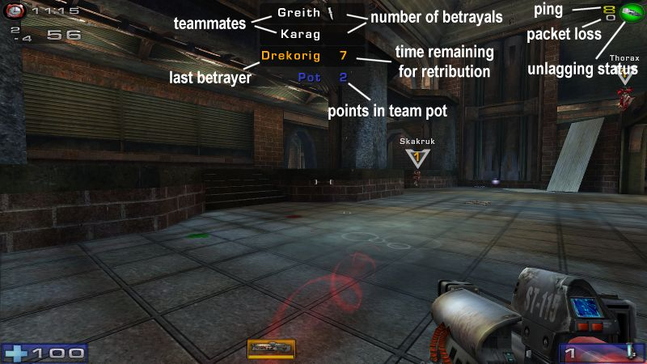
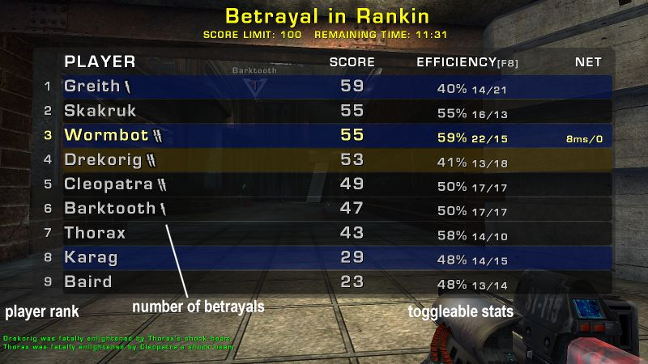

for UT2004 by Wormbo
Betrayal originally is a game mode in Unreal Tournament 3, and this UT2004 port stays very close to the original.
In this game mode you play Instagib DeathMatch with temporary teams of up to 3 players each.
As in regular DeathMatch the goal is to be first to reach a score limit or to have the highest score when time limit hits.
Each kill not only increases your score, but also adds one point to the team pot.
At some point you or a teammate may decide to betray the team and take the pot by killing a teammate with the secondary fire mode of the Super Shock Rifle.
The betrayer receives the pot, leaves the team and becomes a rogue for 30 seconds.
Betraying with 3 or less points in the pot doubles the rogue penalty time to encourage proper gameplay.
During that time a former teammate can kill the betrayer for retribution and 6 additional points.
If the rogue avoids payback, he or she becomes a freelancer and will join another team as soon as one is available.
The key to win is to betray at the right time. The longer you wait the larger the pot gets, but the risk of being betrayed also rises.
Plain Instagib might not be everyone's cup of tea, so this package contains a mutator to replace the Super Shock Rifle with an Instagib Mercury Missile Launcher. Mercury Missiles are very fast rockets, but they are not instant-hit like a shock beam. They even accelerate until they are fast enough to go right through an opponent and potentially hit a second one. Only a direct hit can kill, splash damage just pushes players around.
To install this mod, simply put Betrayal.u and Betrayal.ucl into your UT2004\System directory.
If you are having trouble recording demos in Betrayal, you may need to add the line ServerPackages=Betrayal to the [Engine.GameEngine] section of your UT2004.ini.
To launch Betrayal as start-up game mode, simply add the URL parameter ?game=Betrayal.BetrayalGame to the start-up command line of your server.
To replace the Shock Rifle with the Mercury Missile Launcher, also add ?mutator=Betrayal.MutMercuryIGBetrayal or merge it with an existing ?mutator= URL parameter.
This mutator only works in the Betrayal game mode.
If you are interested in Mercury Missiles for other game modes, visit my download section.
The Redirect folder in the archive contains a compressed version of Betrayal.u for upload to a redirected download server.
Betrayal can be easily configured from within UT2004 when you start a new game or from the webadmin interface if you run it on a dedicated server. Compared to standard DeathMatch it adds a few options:
Clientsidely you can also access several configuration options via the HUD settings page or the commands to access the UTComp or TAM/Freon menu.
The Betrayal HUD adds two new widgets compared to the standard DeathMatch HUD:
In the top center you can find all Betrayal-related information you need.
The list shows your teammates and how often they betrayed their previous teams, the name of the player who betrayed you, if any, and how long you can still try getting retribution, and the team pot size.
Each silver dagger in the betrayal count stands for one betrayal, a gold dagger stands for five betrayals.
If you have betrayed your team, you will instead see how long you need to avoid payback.
The last betrayer is shown regardless of your current status, whether you are a freelancer, rogue or in a team.
At the top right you see a network status widget, which for obvious reasons is only shown in network games.
The larger number is your current ping, the smaller your packet loss rate.
The circle shows the unlagging status.
Green means ping is low and compensation will work well, red means your ping is above the configured maximum unlagging time.
Black means unlagging is not available because either you or the server disabled it, or because Mercury Missiles are used instead of the Shock Rifle.
The circle flashes if you are having connection problems.
Unlike in standard DeathMatch, all players have their name and score value floating above their head.
You will get more points (up to 10) for killing enemy players with a higher score than you and 6 points on top of that if the player was a rogue who betrayed you.
The bonus for higher-ranked players is not added for killing your current teammates or while you are a rogue.
The colors show the player's relation to you: blue is a teammate, gold a rogue, red a former teammate seeking retribution and white are regular opponents.
With swapped team colors, teammates are marked in red while former teammates seeking retribution are marked in blue.
The scoreboard for Betrayal contains many details about the players in the match:
The background color of each row tells about the player's relation to you. A rogue - either you or a player who betrayed you - has a brown background, your teammates are shown in blue, and if you betrayed your team your former teammates have a red background. With swapped team colors, teammates have a red background while betrayed former teammates have a blue one. The first column shows each player's rank. Next is the list of names and their betrayal counts in the same way as on the HUD. After the scores column there's a stats column that can be cycled via the key mentioned after the stats caption. Available stats are:
The final column is not shown in offline games. It contains the player's ping and packet loss, or displays Admin if the player is currently logged in as server admin. No text here means it's a bot. If there are any spectators on the server, they are displayed in the bottom right corner. Spectating admins are marked with (Admin). Before the match starts, rank, score and stats are not displayed. Instead, if the server settings require players to signal whether they are ready, each player's ready status is indicated by a red cross (not ready) or green tick (ready).